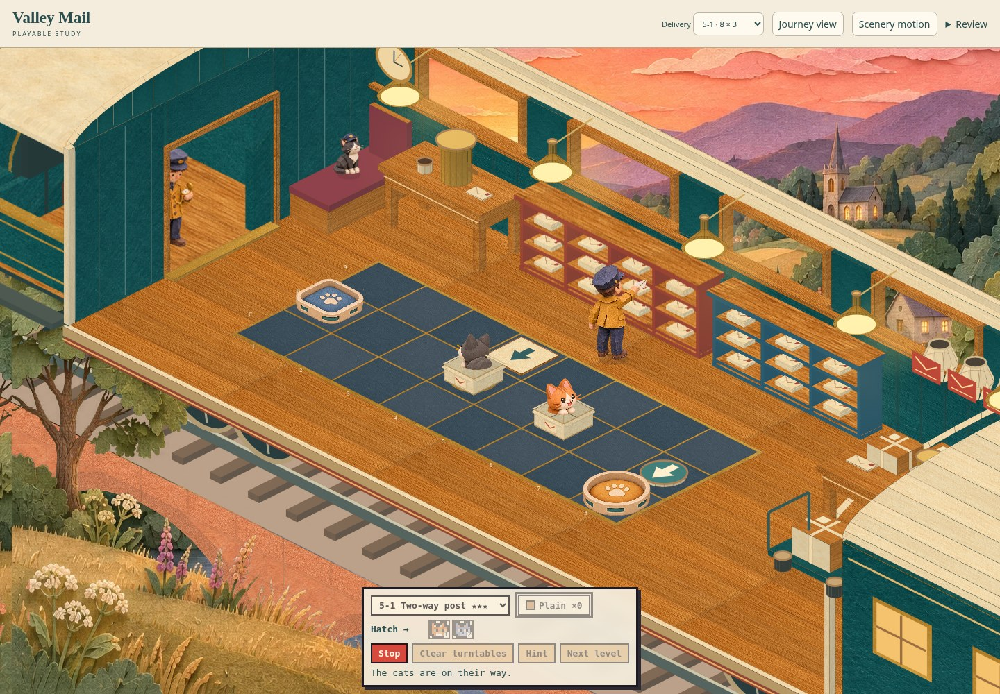
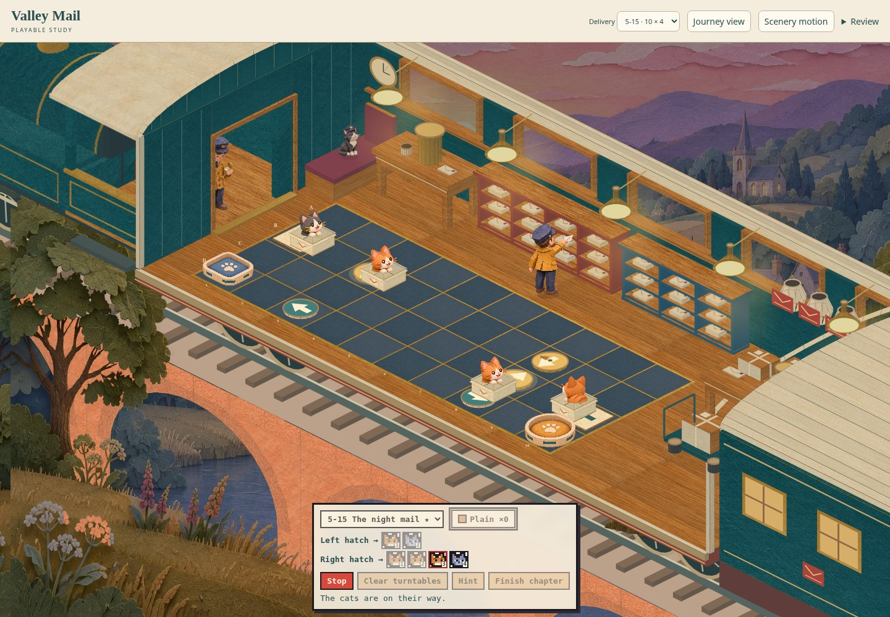
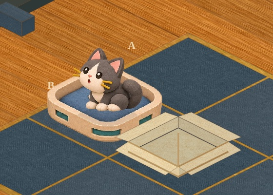
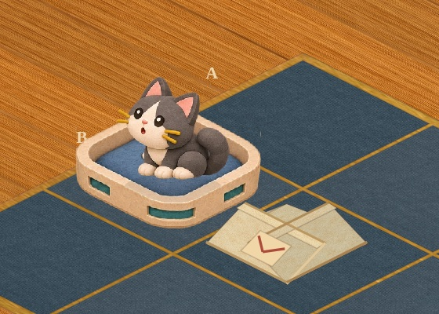
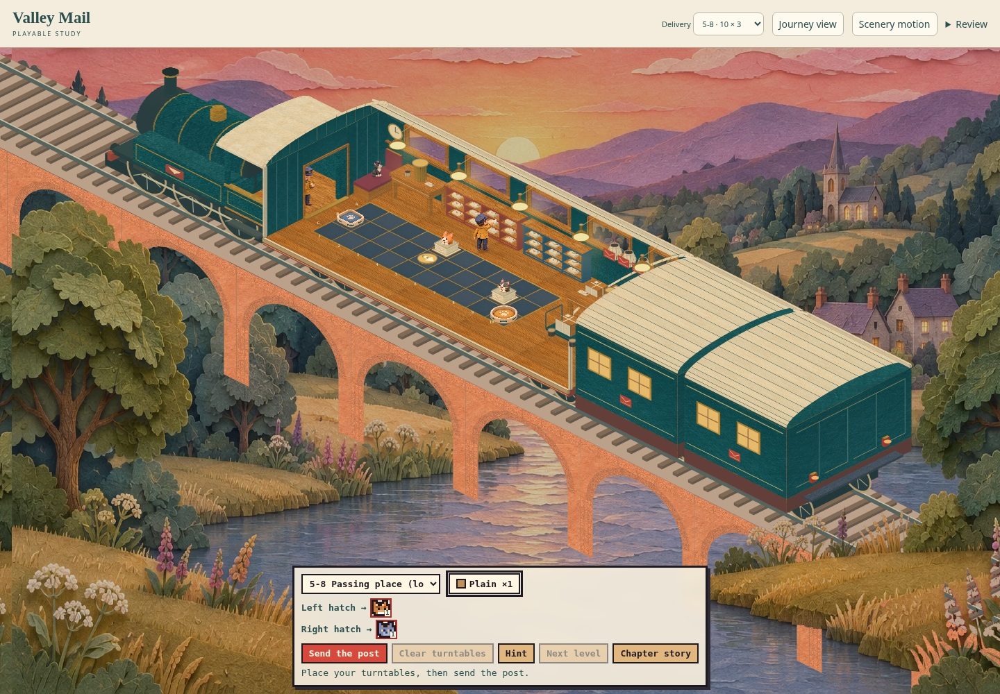
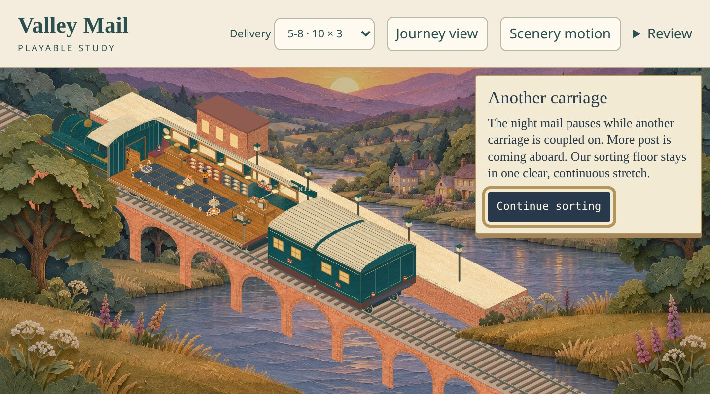

CATS BY POST · MAIL TRAINThe whole journey
All fifteen deliveries and every chapter presentation, checked across desktop, portrait and landscape. The original river, large trees and paper artwork remain. This pass refines the folding cartons, staff routes and carriage connections.
First post to night mail

5-1 · 8 × 3
5-15 · 10 × 4Card that folds
The empty carton now folds its walls inward as rigid paper panels. Takeoff, landing, folding and disappearance still use the original delivery timings.

Before · shrinking walls
After · folding panels, same instantOne last collection
The courier keeps the satchel, follows the aisle around the dispatch desk and trolley, then enters the attached coach. Tea breaks now happen beside the tea table.
Departure at original speed. Clips use sampled browser frames; they are not a device performance test.Tea break
Existing tea routine, shown at 2.4× speed.Connected carriages
Couplings sit below the carriage floors. Narrow gangway plates support the joined passages, and the original station sequence leaves a real open gap while the powered section approaches.

Phone and chapter checks
 Portrait · maximum board
Portrait · maximum board
Landscape · station transitionGameplay, canonical timing, level data and save behaviour remain unchanged. This standalone study uses private progress storage. Physical iPhone/Safari performance and final shared integration remain separate review steps.